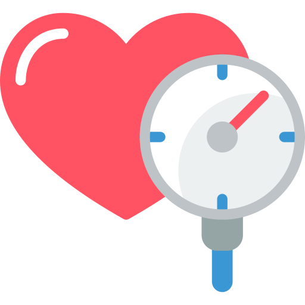
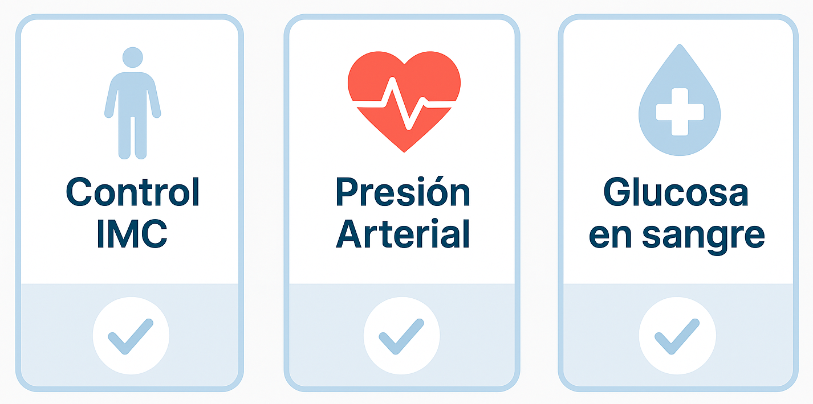

Bienvenido a Nuestra Plataforma de Salud
Evalúa tu bienestar y toma decisiones informadas sobre tu salud con nuestras herramientas gratuitas y confiables.
Evalúa tu bienestar y toma decisiones informadas sobre tu salud con nuestras herramientas gratuitas y confiables.
Calcule su índice de masa corporal con base en peso y estatura.

Clasifique su presión según datos sistólicos y diastólicos.
Obtenga su clasificación según tipo de medición y valor de glucosa.
El seguimiento regular de su salud puede prevenir enfermedades y mejorar su calidad de vida.
Control IMC: Ayuda a prevenir enfermedades relacionadas con el sobrepeso o bajo peso.
Presión Arterial: Detecta riesgos de hipertensión o hipotensión a tiempo.
Glucosa en sangre: Permite identificar y manejar condiciones como diabetes.
Ver más